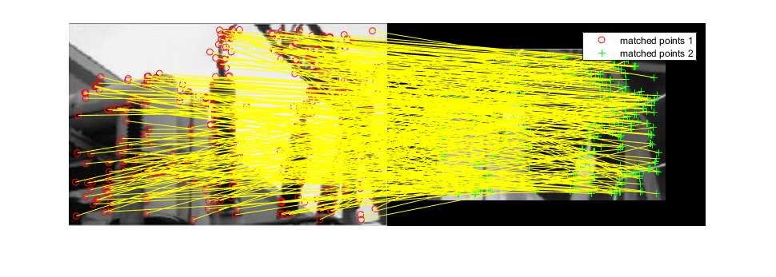
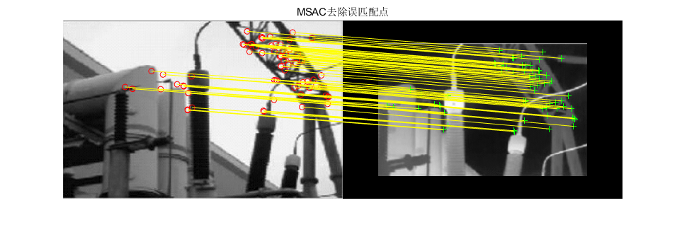

clc;
clear all;
I1= imread('gang1.bmp');
I1=rgb2gray(I1);
I2= imread('gang2.bmp');
I2=rgb2gray(I2);
points1 = detectKAZEFeatures(I1);
points2 = detectKAZEFeatures(I2);
[f1, vpts1] = extractHOGFeatures(I1, points1);
[f2, vpts2] = extractHOGFeatures(I2, points2);
indexPairs = matchFeatures(f1, f2,'Method','NearestNeighborSymmetric','MatchThreshold',100) ;
matched_pts1 = vpts1(indexPairs(:, 1));
matched_pts2 = vpts2(indexPairs(:, 2));
resultpairs1 = matched_pts1.Location;
resultpairs2 = matched_pts2.Location;
figure('name','匹配后的图像');
showMatchedFeatures(I1,I2,matched_pts1,matched_pts2,'montage');
legend('matched points 1','matched points 2');
[tform, inlierBoxPoints, inlierScenePoints] = estimateGeometricTransform(matched_pts1, matched_pts2, 'projective');
figure;
showMatchedFeatures(I1, I2, inlierBoxPoints, inlierScenePoints, 'montage','Parent',axes);
title('MSAC去除误匹配点');
警告: Maximum number of trials reached. Consider increasing the maximum
distance or decreasing the desired confidence.
 